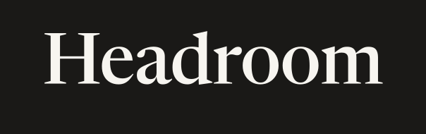
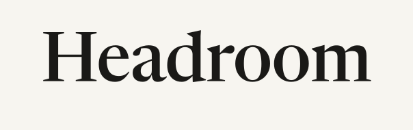
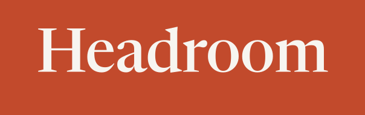

Headroom · 헤드룸
아이콘 없이 글자만. 세 방향은 서체 하나씩만 다르고 색·자간·크기 규칙은 같다. 고른 방향이 랜딩 헤더·앱 헤더·리포트 머리에 그대로 들어간다. 로고 마크(그림)는 이 중 하나가 정해진 뒤 그 서체에 맞춰 외부에서 만든다.
글자를 패스로 바꾼 SVG 라 서체 설치 없이 어디서나 같게 나온다. 파일: headroom-wordmark-dark.svg(기본) · -paper · -vermilion · headroom-wordmark.svg(먹색 글자, 투명 — 헤더·문서용) · -kr(헤드룸, 함렛 600, 보조 표기).



 종이 바탕 헤더 26px + 한글 보조 18px
종이 바탕 헤더 26px + 한글 보조 18px
IBM Plex Mono. 대시보드의 숫자 서체와 같은 계열이라 제품 안팎이 하나로 읽힌다. 회계·개발 도구 느낌이 강해 "친절한 HR 도구"와는 거리가 있다 — 컨설턴트에겐 장점, 담당자에겐 차가울 수 있다.
Newsreader(영문) + 함렛(한글 세리프). 신뢰·문서·보고서의 인상. 세 방향 중 "AI 가 만든 SaaS" 와 가장 멀다. 대신 화면이 조금 무거워지고, 한글 세리프는 작은 크기에서 가독성이 떨어져 본문엔 못 쓴다(제목 전용).
Bricolage Grotesque(영문) + Gothic A1(한글). 자간을 조여 단단한 덩어리로. 국내 B2B SaaS 의 표준 문법이라 안전하지만, 그만큼 다른 도구와 구별이 덜 된다. 담당자 친화성은 셋 중 가장 높다.
바탕은 종이색(#f7f5f0), 글자는 먹색(#1a1917). 강조색은 버튼·링크·등급 표시 한 곳에만. 두 후보 모두 채도·명도를 맞춰 두었고 랜딩의 tweak 으로 바꿔 볼 수 있다.
결재·확인의 색. 눈에 띄고 기억되지만 "경고"와 겹칠 수 있어 위험 등급 색과 구분이 필요하다.
회계 장부·흑자의 색. 차분하고 신뢰감이 있으나 무난해서 인상이 약할 수 있다.